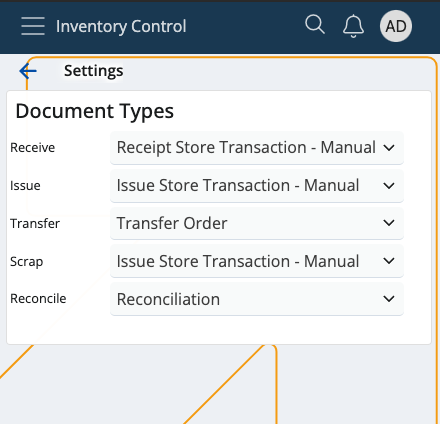

Settings
This section lets you decide what type of document will be created following each of these actions:
- Receive
- Issue
- Transfer
- Scrap
- Reconcile
It's crucial to link the right type to its respective action before beginning to do anything within Inventory Control.

Important
For the Receive and Issue functions, under certain conditions, the Document Type specified in the Document Routes of the respective order will also be taken into account when the final transaction is created.
Navigation
In order to access the Inventory Control Settings, tap on the context menu at the bottom of the screen and select Settings.

Configuration
If you tap on the downward arrows of any of the available options, you'll be taken to a list of your existing document types.
It's possible to link any type to either the receive, issue, scrap, transfer or reconcile operation.
One and the same document type can be used for multiple operations.

Use the Document Type from Routes to create a new document
If certain conditions are met, it is possible to create new documents through Inventory Control by taking in mind both the Document Type specified in the Settings as well as the Document Type defined in the Document Routes for the respective order.
This applies to the Receive and Issue operations, providing more flexibility when defining the final documents they can generate.
Step-by-step process
Perform a validation check for the receive/issue store order by filtering the following fields in the Document TypesFormRoutings panel of the StoreOrders data type:
ProcessEvent: Must be "Change of state".
ConditionStatesBitMask: Must include "Released".
Destination DocumentType: Must be a document of data type "Transactions".
When the store order is created, the Route’s activity must fit within the period specified in the ActivationDate and DeactivationDate fields. Keep in mind that these fields may be empty.
IsActive: Must be "True".
ConditionEnterpriseCompany: Must match the StoreOrder.EnterpriseCompany or be empty.
AllowedGenerationTypes: Must be set to "Only Manually".
Once the filtering procedure is complete, only the Document type is extracted from the remaining routes.
Keeping in mind the results of the validation check as well as the Document Type specified in the Inventory Control Settings, you can encounter the following situations:
No valid result is returned from the Document Routes and no Document Type is specified in the Inventory Control Settings for the receive or issue function.
=> An error will be thrown: "No document type selected".
No valid result is returned from the Document Routes but a Document Type is specified in the Inventory Control Settings for the receive or issue function.
=> A store order of the respective type will be created based on what is provided in the Settings.
Only one valid result is returned from the Document Routes (or multiple valid results all pointing to the same Document Type)
=> A Document Type is selected regardless of what is specified in the Inventory Control Settings.
Multiple different results are returned from the Document Routes.
=> A selection menu is displayed with a dropdown list containing all returned results from the Document Routes plus the Document Type specified in the Inventory Control Settings.

The dropdown list will have a default value, determined as follows:
If at least one of the returned results matches the Document Type specified in the Inventory Control Settings, that Document Type is chosen as the default.
If none of the returned results match the Document Type specified in the Inventory Control Settings, or if no Document Type is specified in these Settings, the default value is the Document Type Code with the smallest Code value.
Note
The screenshots taken for this article are from v24 of the platform.